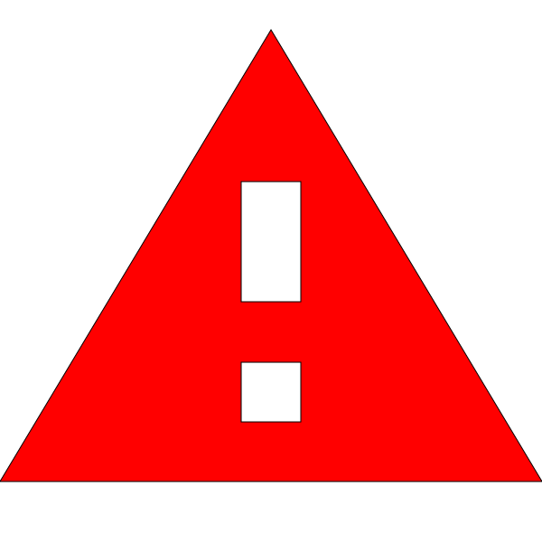

Zablokovaná stránka
Chcete se na zablokovanou stránku dostat?
Návod najdete na jakobejitblokaci.cz.
Tato stránka je jako příklad uvedená v metodickém pokynu k zákonu o hazardních hrách,
další blokované stránky (např. internetovehazardnihry.cz) pak budou
zveřejněny v seznamu nepovolených internetových her.